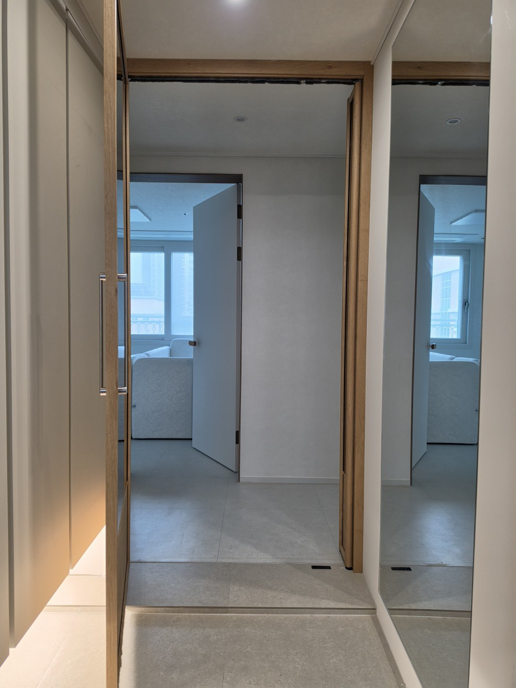
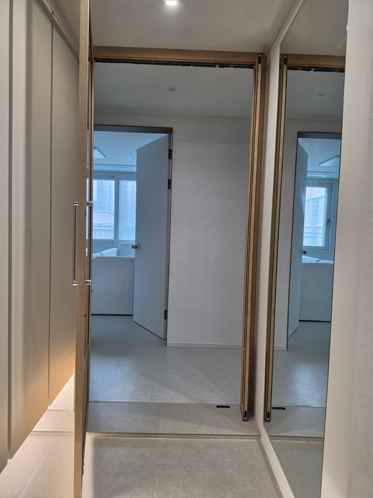
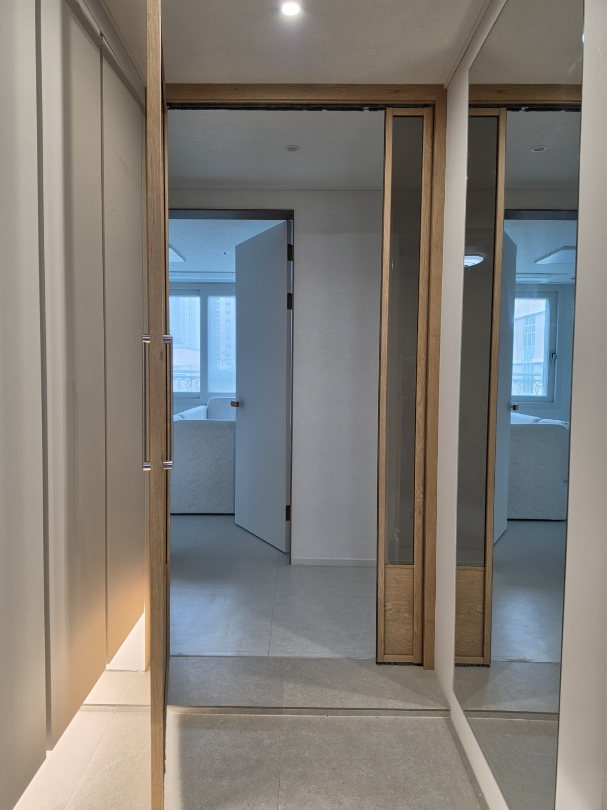
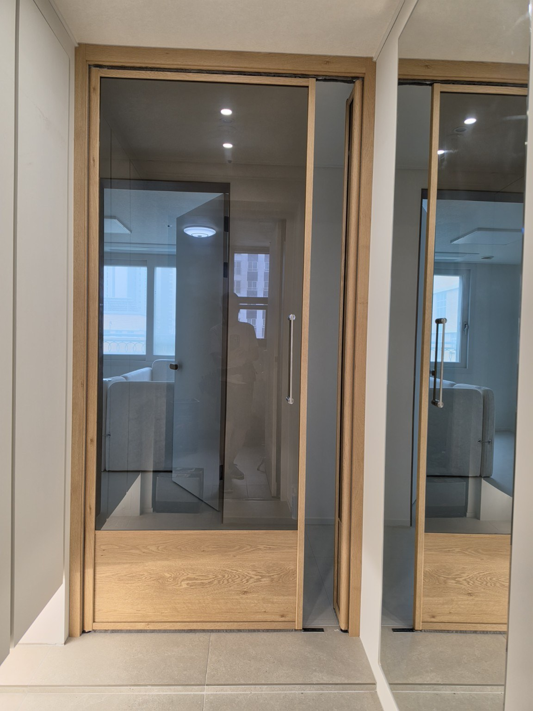
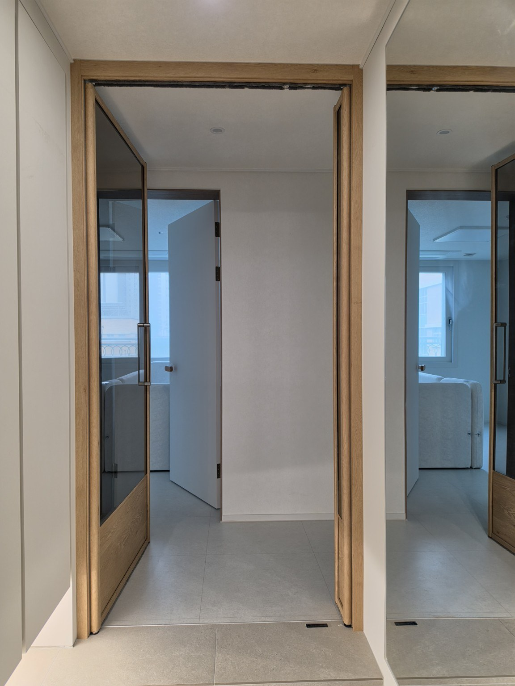
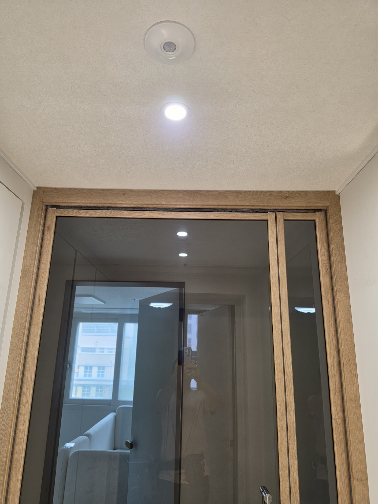

동탄 33평 현관에 맞춘 비대칭 구성
이번 시공은 문짝을 같은 폭으로 나누기보다 평소 출입에 사용하는 큰 문짝과 필요할 때 함께 활용할 수 있는 보조 문짝을 비대칭으로 구성했습니다. 사진처럼 문을 닫았을 때는 우드톤 프레임과 넓은 유리 면이 정돈된 인상을 만들고, 열었을 때는 현관 통로를 넓게 사용할 수 있는 구조입니다.
영림 173번 색상은 현장의 기존 우드톤 방문과 밝은 벽·바닥 사이를 자연스럽게 이어주는 포인트가 됩니다. 중문은 같은 33평형이라도 현관 폭과 신발장 위치, 벽체 구조에 따라 적합한 문짝 비율이 달라질 수 있어 실제 현장 조건에 맞춰 구성하는 것이 중요합니다.
시공 사진







동탄 현관중문 묻고 답하기
어떤 중문을 시공했나요?
영림 173번 색상의 양방향 비대칭 여닫이 현관중문입니다.
비대칭 구성은 왜 사용하나요?
큰 문짝을 일상 출입에 사용하고 보조 문짝을 함께 활용할 수 있어, 현관 폭과 동선에 맞춰 문짝 비율을 조절하기 좋습니다.
양방향 여닫이는 무엇인가요?
출입할 때 한쪽 방향으로만 여는 것이 아니라 양쪽 방향으로 열어 사용할 수 있는 방식입니다.
영림 173번은 어떤 느낌인가요?
이번 현장에서는 따뜻한 우드톤으로 표현되어 밝은 실내 마감과 자연스럽게 어울립니다.
동탄 지역도 맞춤 시공하나요?
네. 문다라는 동탄을 포함한 경기 지역에서 현장 구조와 출입 동선을 확인해 현관중문을 맞춤 제작·시공합니다.